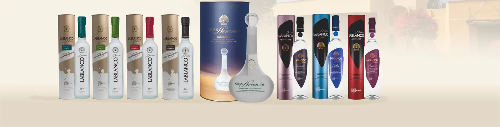
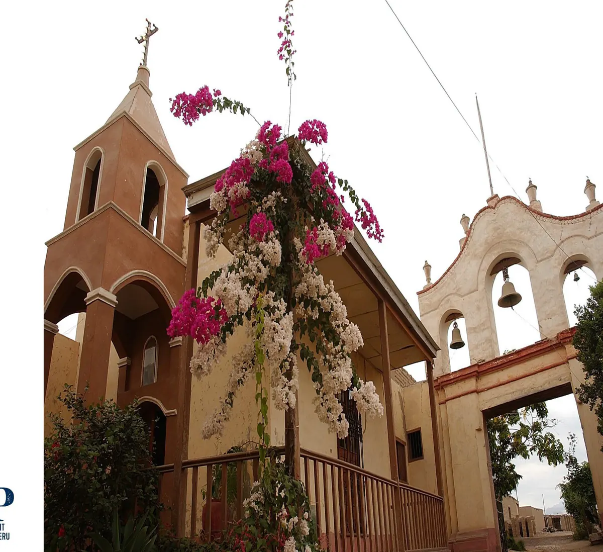
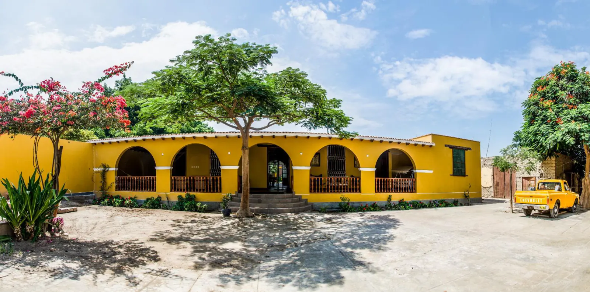
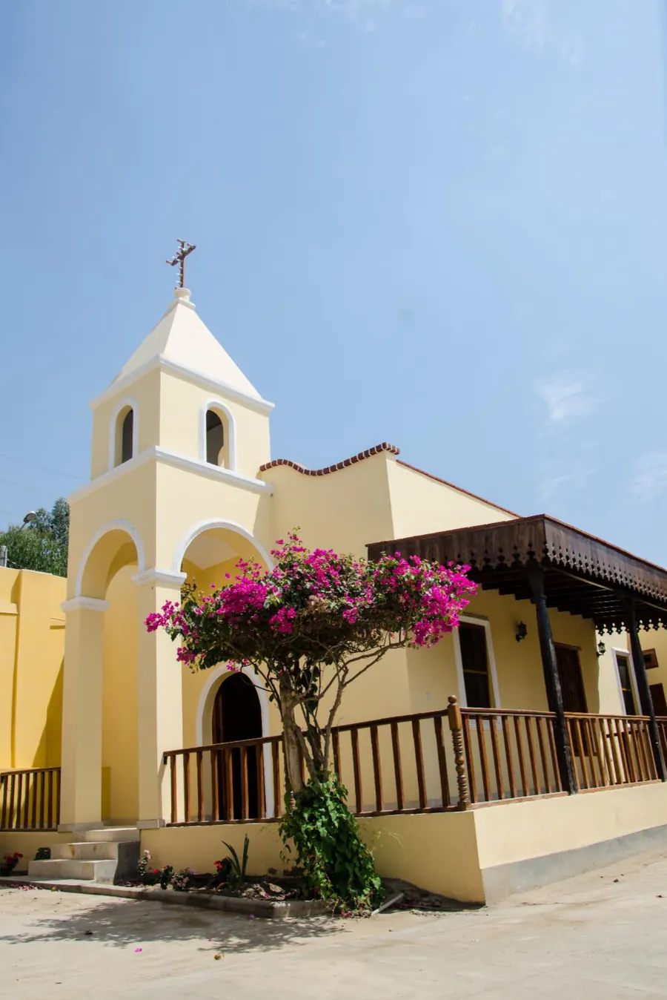
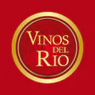
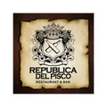
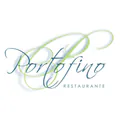
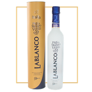

Mosto Verde · Quebranta
Gran Herencia
Excelente Mosto Verde , gran finura y suavidad; muy brillante y de destellos plateados con lágrimas compactas y prolongadas.
S/ 160.00500 ml · 40°
Hacienda La Blanco · Desde 1600
Para ingresar a la tienda de Pisco Lablanco confirma tu mayoría de edad. En el pago volveremos a verificarla con tu documento de identidad.
Lo sentimos: la venta y el consumo de bebidas alcohólicas están prohibidos para menores de 18 años. Te esperamos cuando cumplas la mayoría de edad.
Tomar bebidas alcohólicas en exceso es dañino
Hacienda La Blanco · Valle de Ica · Desde 1600
Nuestro pisco es un destilado a grado de mosto o vino joven de uvas pisqueras, en una sola destilación discontinua. Ahora, de la Hacienda a tu mesa.

Verdadera leyenda
El origen de la Hacienda y Bodega La Blanco se remonta al siglo XVII. Se ubica al sur de Lima, en el distrito de San Juan Bautista, antiguamente llamado Asiento de Quilloay, el distrito más antiguo del Valle de Ica.
Recorrer la historia“La cadena familiar vitivinícola más antigua del Perú.”



La historia de la Hacienda y Bodega La Blanco
Del cacique Anicama, el denominado “Asiento de Quilloay” pasa a los jesuitas. Desde el inicio se instalan las falcas, los primeros destiladores.
Se construye el horno donde se fabricaron las botijas de barro. Cuatro siglos después, aún perdura en la Hacienda.
La Compañía de Jesús vende el Asiento de Quilloay a don Melchor Blanco, de quien toma su nombre la Hacienda La Blanco.
Se introducen los fermentadores tipo morisco, hechos de calicanto.
Llega al mercado nacional la marca Pisco LABLANCO, en botellas forradas en yute y cuero.
Nace la línea Kero y la marca ingresa a los mercados de Estados Unidos y Colombia.
Nuevas presentaciones y la botella del pisco emblemático, “Gran Herencia”.
El siguiente capítulo: de la Hacienda a tu puerta, con compra en línea.
Ir a la tiendaDel viñedo a la botella
Quebranta, Italia, Torontel, Albilla y Moscatel. Con ellas nacen los Clásicos, espirituosos de vino, y los Mosto Verde, de fermentación media.
En fermentadores tipo morisco hechos de calicanto, introducidos en la Hacienda en 1850.
Un destilado a grado de mosto o vino joven, en una sola destilación discontinua, como en las primeras falcas del Asiento de Quilloay.
El video “Proceso de elaboración”, del canal oficial de Pisco Lablanco.
Tienda Lablanco
Mosto Verde · Quebranta
Excelente Mosto Verde , gran finura y suavidad; muy brillante y de destellos plateados con lágrimas compactas y prolongadas.
S/ 160.00500 ml · 40°
Mosto Verde · Torontel
Intenso brillo a plata fina e incoloro, delicado y elegante con dejos frescos a flores y cítricos, de notas dulces de miel y polen, en boca ingreso suave, dulzón generoso con sensaciones de postres de fruta fresca y pétalos de flores blancas con crema y almíbar con final amplio.
S/ 74.90500 ml · 40°
Mosto Verde · Italia
Muy transparente y limpio.
S/ 74.90500 ml · 40°
Mosto Verde · Quebranta
Brillante e incoloro, de aspecto limpio, con lágrimas densas y compactas, de aromas agradables a frutos dulces, maduros con toques de heno y recuerdos a níspero.
S/ 74.90500 ml · 40°
Mosto Verde · Acholado
Es limpio, transparente y viscoso.
S/ 74.90500 ml · 40°
Clásico · Quebranta
Cálido, no ardiente, incoloro, limpio y brillante, de lágrimas densas y finas, agradable y muy bien equilibrado, de aromas a fruta seca, con suaves notas de tostado a falca, de sabor permanente y de gran cuerpo.
S/ 59.00500 ml · 40°
Clásico · Acholado
Muy agradable, de aromas frutal y herbal, níspero, heno, de alcohol suave y de buen equilibrio, ligeramente dulce con un final largo con toques cítricos.
S/ 59.00500 ml · 40°
Clásico · Italia
Transparente, brillante, de agradables y suaves aromas florales y cítricos.
S/ 59.00500 ml · 40°
Clásico · Quebranta
Cálido, no ardiente, incoloro, limpio y brillante, de lágrimas densas y finas, agradable y muy bien equilibrado, de aromas a fruta seca, con suaves notas de tostado a falca, de sabor permanente y de gran cuerpo.
S/ 74.90750 ml · 40°
Clásico · Acholado
Muy agradable, de aromas frutal, herbal, níspero y heno, de alcohol suave y de buen equilibrio, ligeramente dulce con un final largo con toques cítricos.
S/ 74.90750 ml · 40°
Precios referenciales en soles, IGV incluido: los vigentes en Wong.pe el 24/11/2026, varios en promoción (precio regular: Clásico 500 ml S/ 76,00; Mosto Verde S/ 99,00; Gran Herencia S/ 219,90). Se usan solo para ilustrar la propuesta: los precios de la tienda los define Pisco Lablanco.
Así funciona tu compra
Cada paso toma en cuenta las normas peruanas de consumo, bebidas alcohólicas y datos personales, y corre sobre la plataforma de comercio de Shopify.
Precio total en soles con IGV incluido en cada botella, y el carrito guarda tu selección.
Ley 29571 · precio totalAl entrar y otra vez en el pago, con documento y fecha de nacimiento. Si no hay mayoría de edad, no hay venta.
Ley 28681 · art. 5Delivery en Lima o envío a provincias. Ves y aceptas el costo del envío antes de pagar; recibe un mayor de edad.
Ley 29571 · cargos informadosTarjeta, billetera digital o transferencia bancaria, según los medios que habilite la pasarela. La tienda nunca ve tu tarjeta.
Shopify · pasarela de pagoBoleta o factura electrónica por correo, seguimiento del envío y el Libro de Reclamaciones siempre a la vista.
SUNAT · Ley 32495La demostración no cobra ni guarda datos: muestra cómo se vería cada paso con Shopify.
Reconocimientos
También en tiendas

Pisco para empresas
Botellas de 187, 500 y 750 ml, tubos, cajas, cueros, maderas, cerámicos, copas y vasos personalizados.
Gracias por la confianza



¡Hola! ¿En qué te ayudamos? Elige un tema y te atendemos por WhatsApp Business.